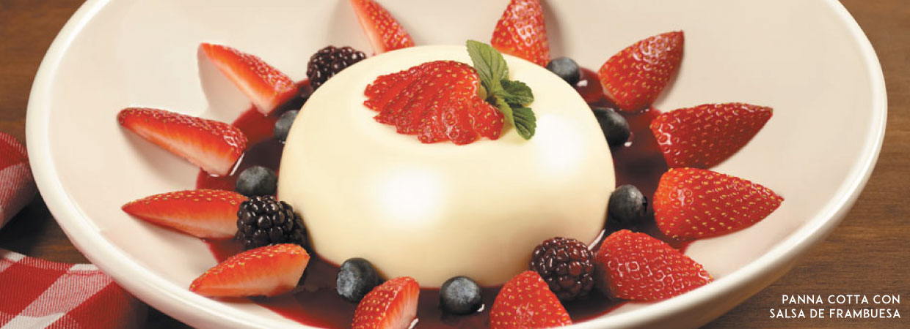
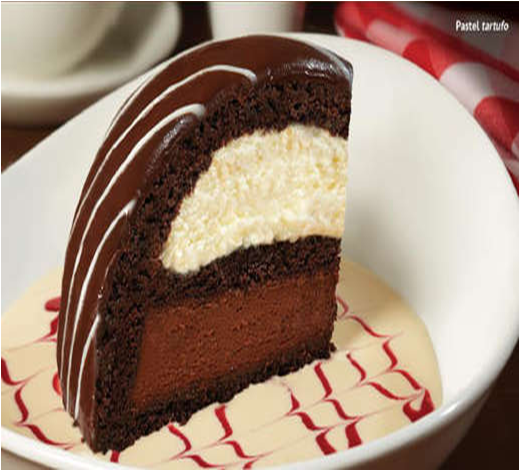

“Ricetta tradizionale piemontese”(Receta tradicional piamontesa). Crema dulce con amaretto sobre un espejo de salsa de frambuesa, acompañado de fresas, moras y zarzamoras.

Pastel tartufo.
¡El auténtico e irresistible italiano!
Una rebanada de pastel de chocolate elaborado con capas de mousse de chocolate blanco y oscuro.

Tiramisú.
Pastel elaborado con galletas soletas cubiertas con café espresso, montadas con auténtico queso mascarpone, licor de café, ron y hojuelas de chocolate, espolvoreado con cocoa.